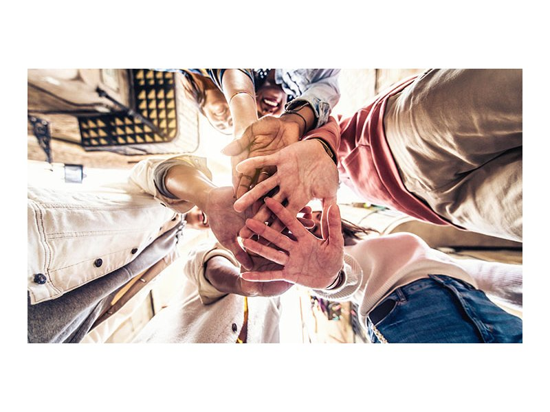

Nossa Missão
Somos uma organização dedicada a promover ações sociais e voluntariado em comunidades carentes. Nosso objetivo é criar oportunidades de desenvolvimento pessoal e social através de projetos bem estruturados e com impacto real na vida das pessoas.
